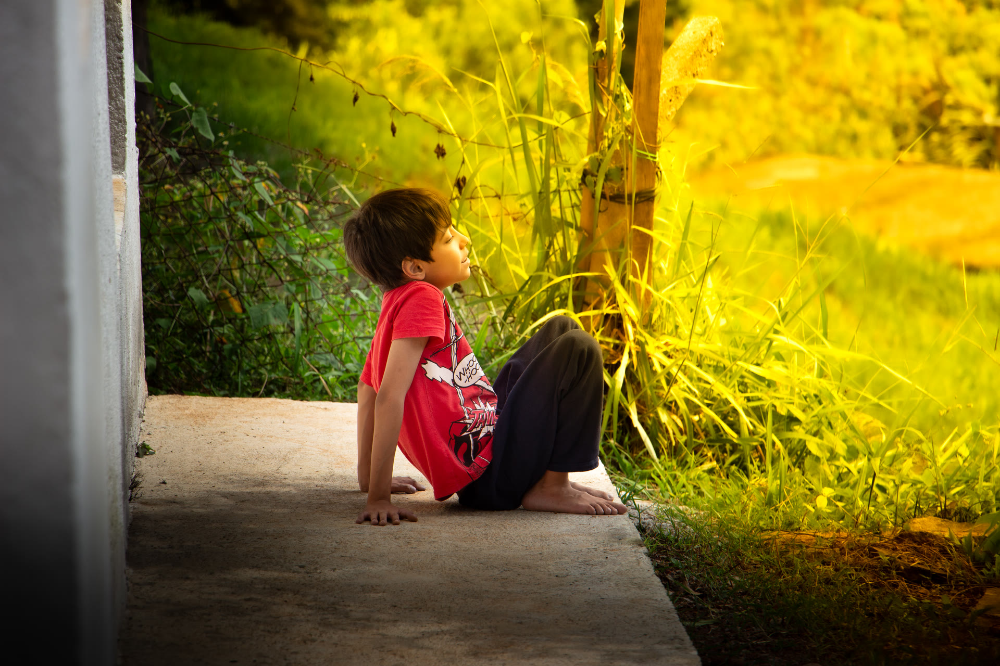

Retratos & ensaios
Sessões individuais ou em dupla, na luz natural — pra perfil profissional, redes sociais ou só pra guardar uma fase.

Fotografia autoral · Sorocaba/SP
Retratos, natureza e cenas urbanas — fotografia feita com calma, pra guardar o que merece ser lembrado.
Portfólio
Cada galeria é um exercício diferente de luz e composição — das ruas de Sorocaba ao mundo virtual.
Quem sou eu
Sou um fotógrafo e desenvolvedor web em desenvolvimento, apaixonado por capturar momentos únicos e transformá-los em memórias que podem ser revividas ao longo do tempo.
Estou no início da minha jornada, mas com muita dedicação e criatividade. Busco criar imagens que transmitam emoção e contem as SUAS histórias.
Por estar começando agora, ofereço sessões fotográficas com valores mais acessíveis, sendo uma ótima oportunidade para quem deseja registrar momentos especiais sem comprometer o orçamento. Meu objetivo é sempre entregar imagens que superem expectativas, criando conexões e lembranças duradouras através da fotografia.
Acredito que cada fotografia tem o poder de despertar os mais profundos da Alma. Seja em retratos, eventos ou projetos autorais. Não basta apenas olhar a imagem, é preciso sentir a emoção que ela transmite. A verdadeira arte é aquela que toca o coração de quem a contempla, despertando sentimentos e memórias únicas.
A verdadeira arte é só um reflexo dos sentimentos de quem a contempla (...) Rafael Lange

Serviços
Sessões individuais ou em dupla, na luz natural — pra perfil profissional, redes sociais ou só pra guardar uma fase.
Aniversários, encontros e registros espontâneos de quem você ama — incluindo os de quatro patas.
Tem uma ideia diferente — produto, espaço, projeto autoral? Me conta e a gente constrói o ensaio juntos.
Contato
Me chama no WhatsApp pra orçar uma sessão, ou manda uma mensagem pelo formulário.